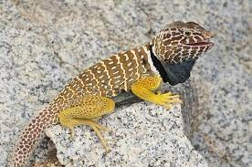
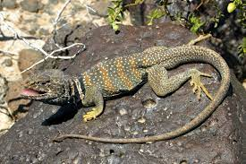
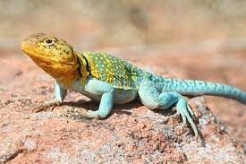

|  | Synonym: Niederkalifornische Halsbandleguan, Baja black-collared lizard
Familie: Iguanidae
Gattung: Crotaphytus - Halsbandleguan
Art: Niederkalifornische Halsbandleguan - (Smith & Tanner 1972) |
|
| Crotaphytus Vestigium |
 | Synonym: Halsbandleguan, Mohave-Halsbandleguan, Mohave-Halsbandleguan
Familie: Iguanidae
Gattung: Crotaphytus - Halsbandleguan
Art: Wüsten-Halsbandleguan - Crotaphytus bicinctores Smith & Tanner 1972 |
|
| Crotaphytus Bicinctores |
 | Synonym: Halsbandleguan, Westlicher Halsbandleguan, Östlicher Halsbandleguan
Familie: Iguanidae
Gattung: Crotaphytus - Halsbandleguan
Art: Halsbandleguan - (Say, 1823) |
|
| Crotaphytus Collaris |